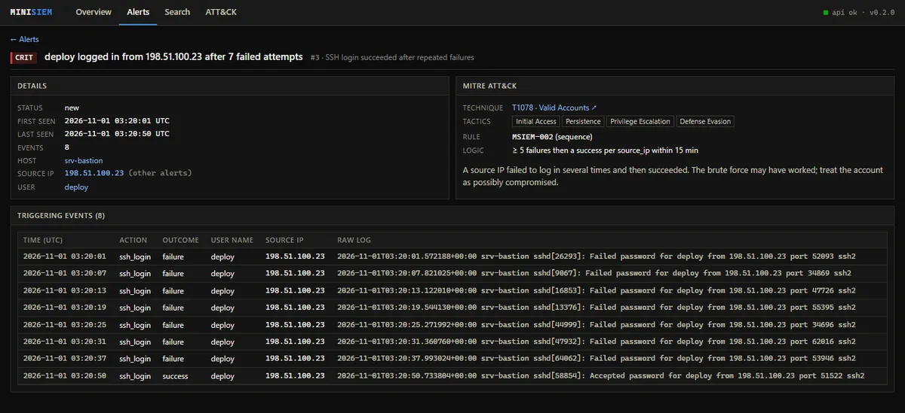
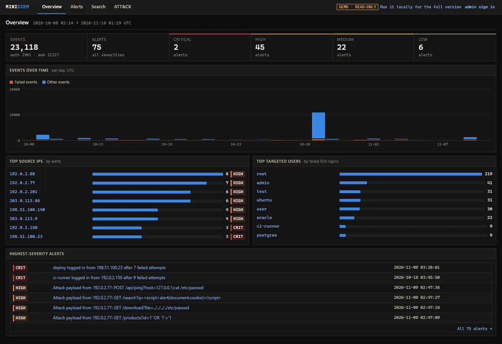
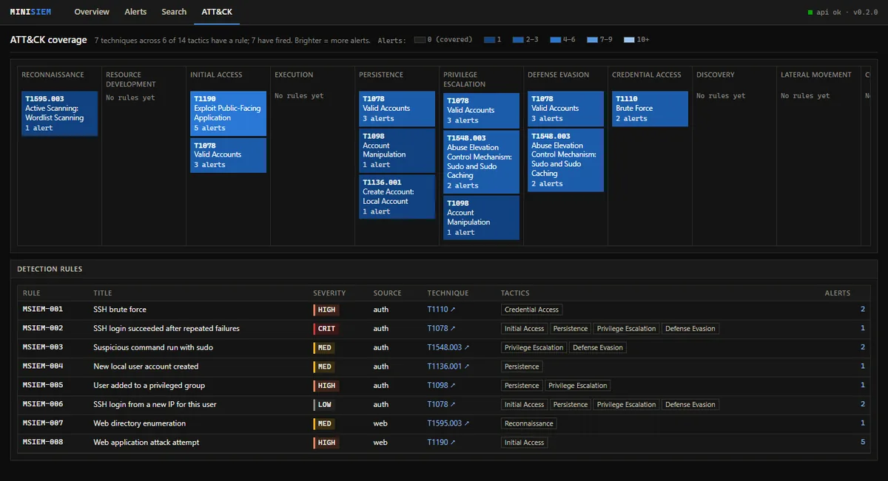

MiniSIEM
Summary
MiniSIEM is a lightweight Security Information and Event Management tool. It ingests Linux auth logs and web server access logs, normalizes them into one event schema, runs Sigma-style detection rules mapped to MITRE ATT&CK, and shows the alerts in a React dashboard with every triggering raw log line one click away. A live demo (opens in a new tab) opens without a password and replays a full intrusion every hour, so there are always fresh alerts to investigate.
Problem
An analyst's day starts in a SIEM, but the real ones are heavy to run and hide how detection actually works. I wanted to build the core loop myself, end to end: collect logs, parse them reliably, write rules that catch a real attack chain without drowning in noise, and give an analyst a view that goes from an alert straight to the evidence.
It also had to be something a reviewer can open in a browser and use in seconds, without installing anything or being handed a password, and without that public access becoming the weak spot.
What I built
- Collection and parsing. Parsers for sshd, sudo, PAM, useradd, usermod and gpasswd (classic and RFC 3339 syslog), and for Combined and Common Log Format web logs. Timestamps are normalized to UTC, the original line is always kept, and unparseable lines are counted and sampled, never silently dropped. Re-ingesting a file adds nothing.
- Detection engineering. Eight rules written as YAML data, each mapped to an ATT&CK technique: SSH brute force, login success after repeated failures, suspicious sudo commands, new local accounts, privileged group changes, logins from a new IP, web directory enumeration and web attack payloads.
- A rule engine. Four rule types (match, threshold, sequence and first-seen) with field modifiers such as
|containsand|re. Alerts are fingerprinted and upserted, so re-running detection never duplicates them. - An analyst dashboard. React 18 and Vite: an overview with events over time and top sources, a filterable alert queue, an alert page with its rule, ATT&CK context and raw log lines, event search, and an ATT&CK coverage heatmap. The charts are hand-drawn SVG.
- A safe public demo. Anonymous visitors are read-only guests, and write endpoints return 403. The sample intrusion replays live on host
demo-live, so new alerts arrive every hour. - Hardening. PBKDF2 password hashes, an httpOnly SameSite=Strict JWT cookie, per-IP login lockout, a fail-closed API, parameterized SQL with allow-listed sort columns, upload validation, and a strict Content-Security-Policy.
How it works
- Normalize first. Every source decodes to one ECS-style event (action, outcome, user, source IP, host) stored in SQLite with indexes on time, IP, user and host. Rules only ever see that schema.
- Rules are data. Thresholds, windows and patterns live in YAML, so tuning a rule never means touching Python. A test checks that the sample dataset fires every rule.
- Alerts link to evidence. Each alert stores the events that triggered it, so the alert page shows the exact raw lines behind the decision.
- A demo that stays current. On Vercel each serverless instance builds its own throwaway database from the example logs, shifted to end at the present. The attack segment of the sample day (web scan, injection attempts, two brute forces, the login, sudo abuse and a backdoor account) is replayed every hour, and each request catches up on lines whose replay time has passed.

Evidence
The bundled sample is a deterministic day of logs with an intrusion in the middle of normal traffic, and every rule fires on it:
Time Actor Activity Rule(s)
02:40 192.0.2.77 wordlist scan of web01 007
02:47 192.0.2.77 SQLi, path traversal, XSS, command injection 008 x5
03:12 203.0.113.45 SSH brute force, fails 001
03:20 198.51.100.23 guesses deploy's password and logs in 001, 002, 006
03:22 deploy sudo cat /etc/shadow, sudo /bin/bash 003 x2
03:24 deploy creates svc-backup, adds it to sudo 004, 005Beyond that day, 29 single-scenario logs cover benign baselines, each attack on its own, format edge cases and evasions the rules deliberately miss. 285 tests cover every parser, every rule (should fire and should not fire), every example log against its manifest, every API endpoint, SQL injection payloads on every parameter, upload validation, guest mode, the replay and authentication. CI runs the tests, rule validation, the frontend build, pip-audit, npm audit and a gitleaks secret scan on every push to main and every pull request.


What I'd do next
- Alert triage. Status, assignee and notes on each alert, so the queue becomes a workflow rather than a list.
- Real-time collection. Ingestion is batch-only today (CLI or upload). Syslog or folder watching is next.
- Cross-source correlation. Tie the web attack and the SSH intrusion together as one incident instead of separate alerts.
- Scale honestly. Detection re-scans all stored events each run, which is fine for a demo but not production; incremental processing and a shared rate-limit store would come first.